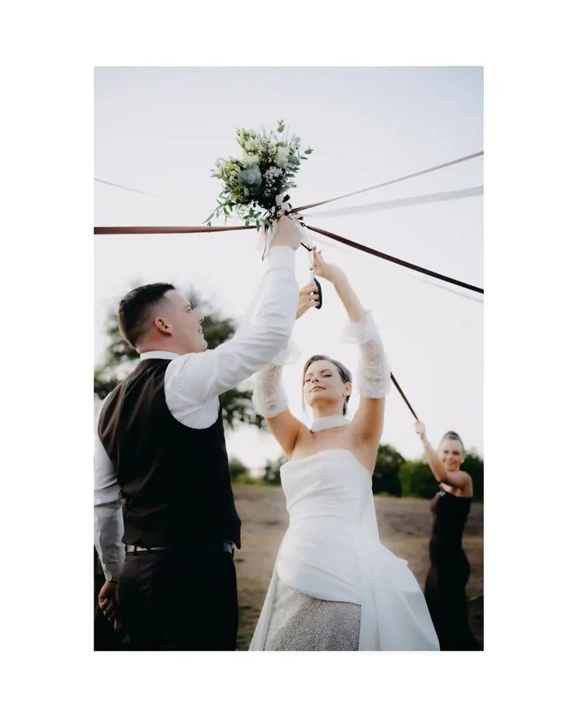
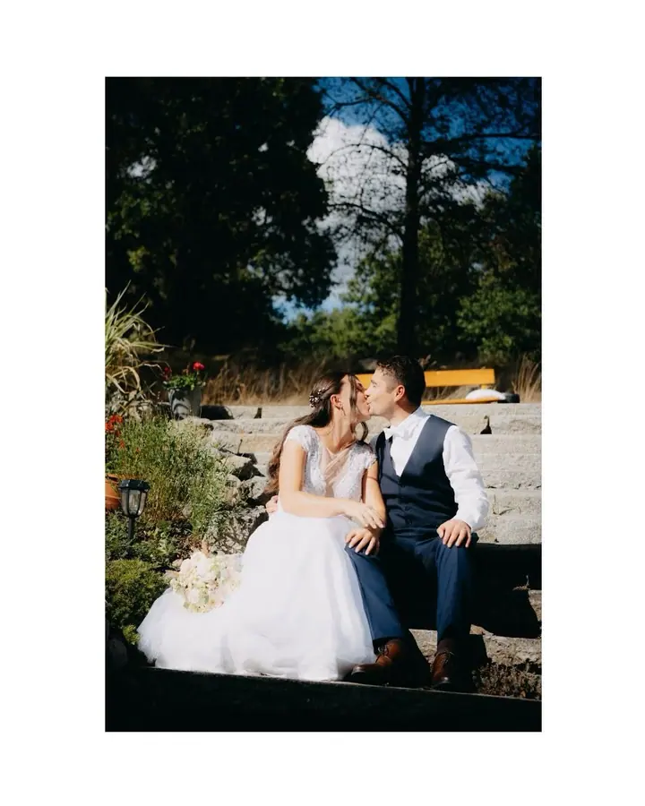
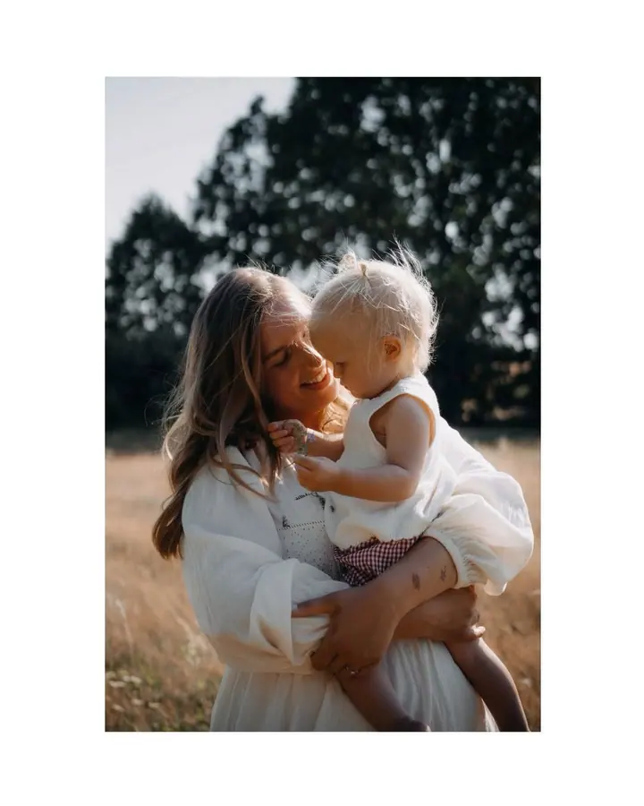

jedna
Svatby
Mini balíček s obřadem, skupinkami a krátkým novomanželským focením, nebo celý den zhruba osm hodin. Svatební booking na rok 2027 je otevřený.


Jmenuji se Lenka Čížková a jsem fotografka z jihu Čech. Fotím svatby, páry i rodiny a nejvíc mě baví přirozené chvíle, které se nedají naaranžovat.
Více o mně
Co fotím
jedna
Mini balíček s obřadem, skupinkami a krátkým novomanželským focením, nebo celý den zhruba osm hodin. Svatební booking na rok 2027 je otevřený.
dvě
Procházka ve dvou, při které se nemusíte nic učit ani pózovat. Nejraději zachycuji doteky a pohledy, které mezi vámi přijdou samy.
tři
Hodina venku nebo v ateliéru, kde je místo na smích, objetí i dětské vrtění. Posílám vám všechny povedené fotografie.
Hodinové focení venku na místě, které si předem domluvíme, nebo ve vybraném ateliéru. Fotím také business fotky pro vaši práci.
Vaše vzpomínky zachytím s citem a upřímností.
Za objektivem
Fotografování je pro mě především radost a způsob relaxace. Když fotím, nehledám dokonalé pózy, ale úsměvy, doteky a pohledy, které mezi vámi vzniknou samy.
Tyhle chvíle chci uchovávat nejen pro sebe, ale hlavně pro vás. Vážím si toho, že mi svěřujete své vzpomínky, a snažím se je zachytit s citem a upřímností.
Mimo focení pracuji v HR, miluju dobré jídlo, kafe a kočky. Na focení se mnou se nemusíte stresovat, vezměte s sebou dobrou náladu a zbytek vyřešíme spolu.
Lenka
Ozvěte se přes formulář nebo zprávou na Instagramu. Napište mi, jaké focení si představujete a kdy by se vám hodilo.
Společně vybereme místo venku nebo ateliér a u svatby probereme, jestli chcete mini balíček, nebo celý den.
Fotíme v klidu a bez strojených póz. Já vás jemně navedu, vy si užíváte chvíli spolu.
Fotky vyberu a upravím a pošlu vám všechny povedené snímky, ne jen pár vybraných.
Portfolio
Otázky
Mini balíček s obřadem, skupinkami a krátkým novomanželským focením (zhruba 2 až 3 hodiny) stojí 5 000 Kč. Celodenní focení svatby, zhruba 8 hodin, stojí 10 000 Kč.
Svatební booking na rok 2027 je otevřený. Napište mi datum vaší svatby a já vám hned dám vědět, jestli je volné.
U všech typů focení vám posílám všechny povedené fotografie.
Párové a portrétní focení venku stojí 1 000 Kč za hodinu, rodinné focení 1 200 až 2 000 Kč. V ateliéru se k ceně připočítává pronájem ateliéru.
Pokud je cesta delší než 50 km, připočítávám za dopravu 500 až 1 000 Kč.
Napište pár vět o tom, co si představujete. lenkacizkova95@seznam.cz